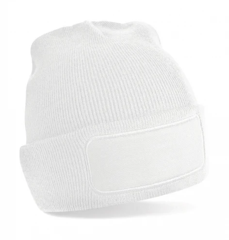

Ehhez a színhez a termékkép még feltöltésre vár.
Téli sapka
Original Patch Beanie
Falk & Ross · Cikkszám: 319.69
Dupla rétegű kötött sapka, emblémázható elülső betéttel.
Nettó ár: 1 090 Ft / db
Az árak nettó árak, az áfát nem tartalmazzák.
Kiválasztott szín: White
A képernyőn látható színek tájékoztató jellegűek. A Malfini-színeket a beszállító kódjával jelöljük.
Erre a termékre kérek ajánlatot ↗Minimum összesen 5 darab, akár többféle termékből.
Az ajánlatkérés nem jelent végleges megrendelést.
Termékinformációk
- 100% puha tapintású poliakril
- Dupla rétegű kötött anyag
- Pamut twill betét: 10 × 5 cm
Forrás: Falk & Ross termékoldal ↗
Ellenőrizve: 2026. október 6.
Az emblémázás módját a grafikád és a termék alapján egyeztetjük.
Mérettáblázat
Méretadatok: pontosításra várnak
A beszállító mérettáblázatként termékadatlapot ad meg; részletes méretsor nem szerepel benne.
Gyártói adatlap megnyitása (PDF) ↗